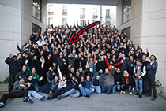

{EPITECH.} – Promotion 2015
I am Thomas (the one marked by the red arrow in the photo) aka “Mr21”.
Everything began in 2006 when my godfather gave me my first laptop.
Once this old ThinkPad in my hands, I started to play with the HTML,
I was immediately fascinated by the creative side of this thing.
Wanting to go further, I bought, read and learned almost by heart the K&R.
During my free time, I began to understand the fundamentals of C.
But the love I had for the programming occupied a place increasingly important in my life,
to a degree that it became incompatible with the school.
This is why I joined Epitech in 2010.
However I am never satisfied of its courses lightened.
For example, my skills in JavaScript or in the Web in general have been learned by myself.
Unlike many engineers, I don't denigrate the world of graphics I think instead
it's very important to have a foot in both fields.
Thus I learned on the heap how to master Photoshop and other
essential softwares, such as Illustrator or InDesign,
I also have some knowledge of 3D modeling via Maya.
So, thank you very much for your visit with hope to keep in touch.
Je suis Thomas (celui pointé par la flèche rouge sur la photo) aka « Mr21 ».
Tout a commencé en 2006 quand mon parrain m'a donné mon premier laptop.
Une fois ce vieux ThinkPad entre les mains, j'ai commencé à jouer avec le HTML,
j'ai tout de suite été passionné par le côté créatif de la chose.
Voulant aller plus loin, j'ai acheté, lu et appris presque par cœur le K&R.
Durant mes heures perdues Je commencais à comprendre les fondamentaux du C.
Mais l'amour que j'avais pour la programmation occupait une place de plus en plus importante dans ma vie,
à un point que ça en est devenu incompatible avec le lycée.
C'est la raison pour laquelle j'ai rejoint Epitech en 2010.
Cependant je ne me suis jamais contenté de ses cours allégés.
Par exemple, mes compétences accrues en JavaScript ou dans le Web en général ont été apprises par moi-même.
À l'inverse de beaucoup d'ingénieurs, je ne dénigre pas le monde du graphisme je pense au contraire
qu'il est très important d'avoir un pied dans les deux domaines.
De ce fait j'ai appris sur le tas à maîtriser Photoshop ainsi que d'autres logiciels
incontournables, tel que Illustrator ou InDesign,
j'ai également quelques notions de modélisation 3D via Maya.
Sur ce, je vous remercie beaucoup de votre visite en espérant garder contact.
As part of my studies, I have coded in a team of students for a few software such as : Z shell, POV-Ray, FileZilla, … These projects were mainly written in C or C++ and lacked originality, hence I prefer showcasing my extra-curricular projects as it shows my creative side along with my technical capabilities.
Dans le cadre de mes études, j'ai eu à recoder en équipe avec d'autres étudiants des logiciels tels que : Z Shell, POV-Ray, FileZilla, … Ces projets ont été écrits majoritairement en C ou en C++ et manquent cruellement d'originalité, c'est pourquoi j'ai choisi d'exposer ici mes projets extra-scolaire mettant en valeur mon côté créatif.